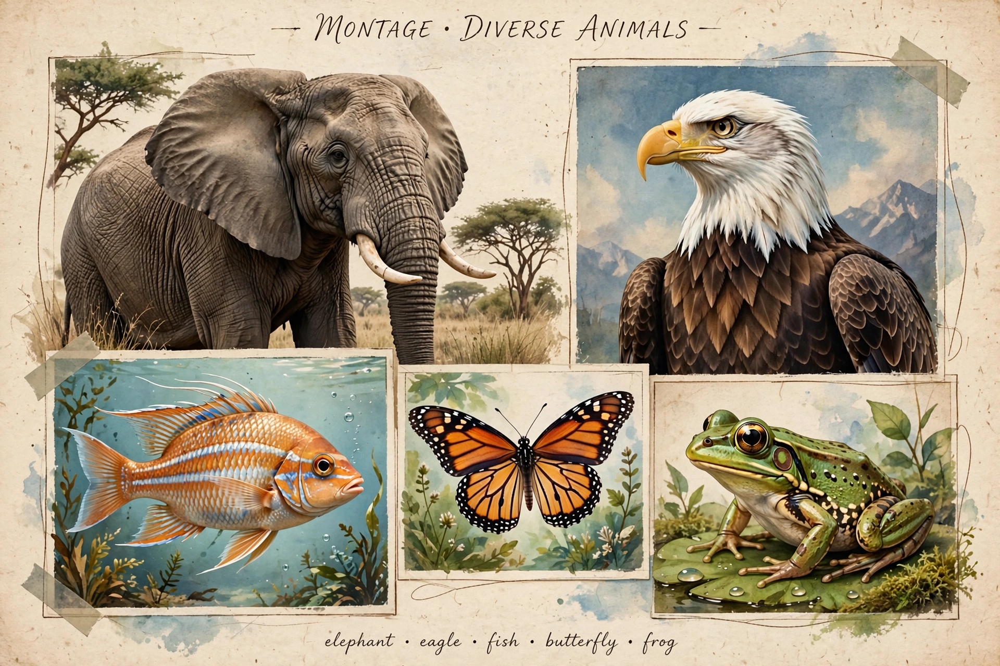

Animals are multicellular, eukaryotic organisms in the biological kingdom Animalia (also called Metazoa). With few exceptions, animals consume organic material, breathe oxygen, have myocytes and are able to move, can reproduce sexually, and grow from a hollow sphere of cells, the blastula, during embryonic development. Animals form a clade, meaning that they arose from a single common ancestor.
| Animal | |
|---|---|
| Kingdom | Animalia |
| Described species | Over 1.5 million living species |
| Major groups | Bilateria, Cnidaria, Ctenophora, Porifera, Placozoa |
| Fossil range | Ediacaran – present |
Animal cells lack the rigid cell walls of plants and fungi and are held together by collagen and other extracellular proteins. Most animals have specialised tissues, including muscle and nervous tissue, and most reproduce sexually, with a dominant diploid stage. Animals are heterotrophs: they obtain energy by ingesting other organisms or their products.
Over 1.5 million living animal species have been described — of which around 1 million are insects — but total estimates run to several million. The earliest animal fossils appear in the Ediacaran period, and nearly all modern phyla were established during the Cambrian explosion about 539 million years ago. Living phyla include the sponges (Porifera), cnidarians, ctenophores and the bilaterians, which encompass arthropods, molluscs, annelids, echinoderms and chordates, including vertebrates and humans.
Humans have used animals for food, materials, transport, labour, companionship and research throughout history; livestock alone make up the great majority of terrestrial vertebrate biomass. Animal welfare, rights and conservation are major ethical and policy concerns.
Animal — recreated from memory.